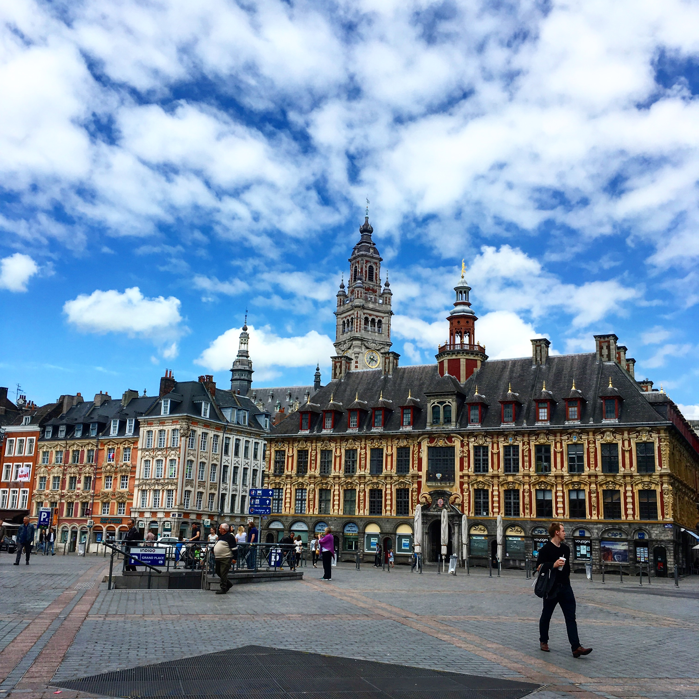

CityLoop Quest Lille


Lille naît d’une évidence géographique : un passage humide, mais stratégique, au bord de la Deûle. Avant de devenir une grande métropole, la ville est d’abord un point de contact entre terres flamandes, chemins marchands et voies d’eau. Son nom rappelle l’idée d’une île, ou d’un espace entouré de bras d’eau et de marécages. Ce décor explique beaucoup : ici, on commerce, on traverse, on contrôle, puis on fortifie. La ville ne s’est pas imposée par un seul monument, mais par une position patiemment exploitée.
Au Moyen Âge, Lille grandit dans l’orbite des comtes de Flandre. La tradition associe fortement la ville à Baudouin V et à la comtesse Adèle, puis à Jeanne et Marguerite de Flandre, figures essentielles pour comprendre l’essor religieux, hospitalier et économique du territoire. L’Hospice Comtesse, encore visible dans le Vieux-Lille, rappelle cette période où charité, pouvoir et urbanisation se mêlent. Autour des marchés, des halles et des lieux de culte, la cité devient un organisme dense, tourné vers l’échange.
Le visiteur peut encore lire cette naissance urbaine dans la trame des rues. Le Vieux-Lille n’est pas un décor figé : ses façades étroites, ses rues courbes et ses maisons de brique racontent une ville qui s’est adaptée à l’eau, aux remparts et au commerce. Les noms de rues, les passages serrés, les placettes et les alignements irréguliers gardent la mémoire d’une croissance progressive plutôt que d’un plan tracé d’un seul geste.
Le développement de Lille s’accélère ensuite grâce au textile, aux échanges régionaux et à sa situation frontalière. La ville passe de la Flandre bourguignonne aux Habsbourg, puis au royaume de France après la conquête de Louis XIV en 1667. Chaque période ajoute une couche : institutions, fortifications, hôtels particuliers, quartiers industriels, gares, grands boulevards et équipements culturels. Lille devient ainsi une ville de superpositions, où le médiéval, le classique, l’industriel et le contemporain dialoguent sans toujours se ressembler.
Pour commencer votre exploration CLQ, observez donc Lille comme une ville construite par couches. Ne cherchez pas seulement le plus beau bâtiment : repérez les traces d’eau, les briques, les façades flamandes, les rues commerçantes et les grands axes modernes. C’est cette combinaison qui donne à Lille son caractère : une ville née d’un passage, enrichie par les échanges, transformée par les pouvoirs successifs, et toujours capable de se réinventer.
Gardez cette origine en tête lorsque vous revenez vers la Grand-Place ou vers les rues anciennes : Lille n’est pas née d’un geste spectaculaire, mais d’un patient équilibre entre eau, commerce et défense. La ville actuelle a largement recouvert les bras de la Deûle et les anciennes limites, mais son tracé garde des indices de ce premier paysage. Une rue légèrement courbe, une place marchande, un nom ancien ou une façade tournée vers un axe de passage racontent encore cette naissance discrète. À mesure que la promenade avance, remarquez aussi la façon dont Lille a déplacé son centre de gravité sans rompre avec son noyau initial. Les anciens espaces d’eau ont été canalisés, les fonctions marchandes ont changé de forme, les remparts ont disparu ou se sont transformés, mais l’idée de carrefour demeure. C’est cette permanence qui rend le vieux centre si intéressant : il ne se contente pas de montrer des façades anciennes, il conserve l’organisation mentale d’une ville née pour relier. Lorsque vous passez d’une place à une rue plus étroite, d’un axe animé à une cour intérieure, vous traversez en réalité plusieurs états successifs de la ville. Cette lecture lente évite de réduire Lille à une carte postale flamande ; elle montre une cité d’adaptation, bâtie sur un sol complexe, attentive au commerce, vulnérable aux conflits, mais toujours capable de transformer une contrainte en ressource urbaine.